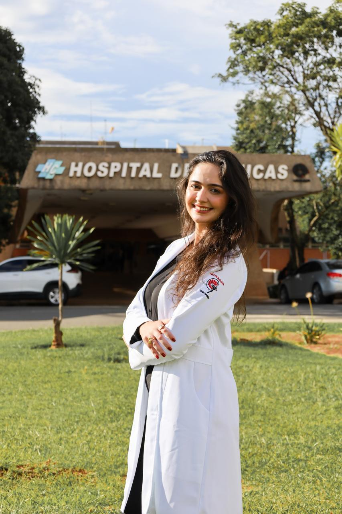
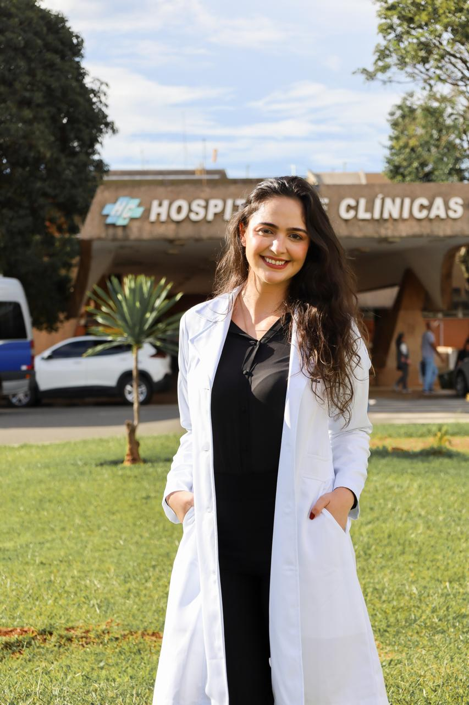

Hemodiálise
Experiência no manejo de pacientes em hemodiálise, incluindo situações crônicas e agudas.
Sou médica com formação em Clínica Médica e residência em Nefrologia pela UNICAMP. Acompanho pessoas com doenças renais, alterações nos exames e condições que afetam a saúde dos rins, buscando oferecer um cuidado individualizado, fundamentado em evidências e atento à qualidade de vida.


Sou Julielly Almeida Andrade Brandão, médica formada pela Universidade José do Rosário Vellano (UNIFENAS), com residência em Clínica Médica pelo Hospital das Clínicas Samuel Libânio, em Pouso Alegre, e residência em Nefrologia pela Universidade Estadual de Campinas (UNICAMP).
Minha trajetória profissional foi construída em diferentes contextos da assistência médica, incluindo enfermaria, ambulatório, hemodiálise e atendimento hospitalar de pacientes com condições clínicas agudas e crônicas, inclusive em situações de maior complexidade e suporte nefrológico em UTI.
Na Nefrologia, meu trabalho envolve a investigação e o acompanhamento de doenças que comprometem a função renal, alterações metabólicas e hidroeletrolíticas, glomerulopatias e pacientes transplantados.
Atualmente, também realizo formação em OncoNefrologia, ampliando meus conhecimentos sobre o cuidado renal em pacientes com doenças oncológicas.
Acredito que uma boa assistência começa pela compreensão de cada paciente. Por isso, valorizo uma consulta atenta, a análise cuidadosa dos exames e a explicação clara das possibilidades de investigação e tratamento.
RQE nº 68191 — Clínica Médica.
A experiência em diferentes ambientes de assistência permite uma visão abrangente das condições clínicas e nefrológicas, desde a investigação diagnóstica até o acompanhamento de situações de maior complexidade.
Experiência no manejo de pacientes em hemodiálise, incluindo situações crônicas e agudas.
Acompanhamento de pacientes com doença renal crônica, glomerulopatias, alterações metabólicas e transplante renal.
Atuação em enfermaria clínica e avaliação de pacientes com condições nefrológicas agudas e crônicas.
Suporte nefrológico a pacientes em unidades de terapia intensiva e em situações clínicas de maior complexidade.
Experiência em biópsias renais, acessos para terapia dialítica e ultrassonografia à beira-leito.
Atuação ambulatorial no acompanhamento de pacientes transplantados e nas condições relacionadas à saúde renal.
A formação em Nefrologia também envolve experiência prática em procedimentos diagnósticos e terapêuticos relacionados ao cuidado de pacientes com doenças renais.
Ao longo da trajetória profissional, foram desenvolvidas habilidades em procedimentos realizados em ambiente hospitalar e no acompanhamento de pacientes que necessitam de terapia renal substitutiva.
Cuidado e acompanhamento de condições que afetam os rins e o equilíbrio do organismo.
Avaliação e acompanhamento da função renal, com foco na identificação de fatores de risco e na preservação da saúde dos rins.
Investigação e acompanhamento de doenças que afetam os glomérulos, estruturas responsáveis pela filtração do sangue nos rins.
Acompanhamento clínico de pacientes transplantados e avaliação de condições relacionadas ao funcionamento do rim transplantado.
Avaliação de alterações de cálcio, fósforo e paratormônio relacionadas à doença renal crônica.
Investigação e manejo de alterações de sódio, potássio e outros eletrólitos, além de distúrbios do equilíbrio ácido-base.
Investigação de hipertensão arterial, creatinina elevada, presença de proteínas ou sangue na urina e outras alterações relacionadas à função renal.
Alterações na função renal podem evoluir sem sintomas evidentes. A avaliação médica e o acompanhamento adequado são importantes para identificar precocemente possíveis problemas.
A medicina exige aprendizado contínuo. A participação em atividades científicas, congressos e apresentações de casos clínicos faz parte da trajetória de atualização profissional.
Durante a residência e a formação médica, também houve participação em atividades acadêmicas, representação estudantil e apresentação de trabalhos científicos.
Relato apresentado no XXIII Congresso Paulista de Nefrologia, em Campinas/SP, em setembro de 2025.
Relato de caso clínico apresentado no XXIII Congresso Paulista de Nefrologia, em Campinas/SP, em setembro de 2025.
Trabalho apresentado no Congresso Brasileiro de Clínica Médica e Sétimo Congresso Internacional de Medicina de Urgência e Emergência, em 2023.
Cada pessoa tem uma história, necessidades e condições diferentes. Por isso, o cuidado começa com uma avaliação individualizada e uma conversa clara sobre os próximos passos.
Compreensão da história clínica, sintomas, rotina, antecedentes e principais preocupações do paciente.
Análise dos exames, medicamentos em uso e fatores que podem influenciar a saúde e a função renal.
Definição das possibilidades de investigação e tratamento, considerando as necessidades individuais de cada pessoa.
Reavaliação da evolução clínica e adequação das condutas de acordo com a resposta ao tratamento.
O atendimento é particular. A emissão de recibo permite que você consulte seu convênio sobre a possibilidade de reembolso.
Se possível, leve exames anteriores, receitas e a relação dos medicamentos que utiliza. Essas informações ajudam na avaliação do seu histórico.
A possibilidade de atendimento por telemedicina pode ser consultada diretamente pelo WhatsApp.
A consulta envolve a avaliação da história clínica, análise dos exames disponíveis, identificação das necessidades individuais e discussão das possibilidades de investigação e tratamento.
A avaliação nefrológica pode ser indicada diante de alterações na creatinina, presença de proteínas ou sangue na urina, hipertensão de difícil controle, doença renal conhecida ou fatores de risco para comprometimento da função dos rins.
Em muitos casos, o diagnóstico precoce, o controle dos fatores de risco e o acompanhamento médico podem ajudar a retardar a progressão da doença renal. A estratégia depende de cada condição clínica.
Entre em contato para obter informações sobre atendimento e agendamento de consultas.
Localização de referência
Igreja Matriz de São Sebastião e São Roque
Praça Coronel Ananias de Andrade, 111
Centro · Bom Repouso/MG
CEP 37610-000
Telefone e WhatsApp (35) 99919-1397
E-mail julielly.almeida@hotmail.com
Ver localização no Google Maps
A localização exibida no mapa é uma referência na região central de Bom Repouso/MG, não necessariamente o endereço do consultório.